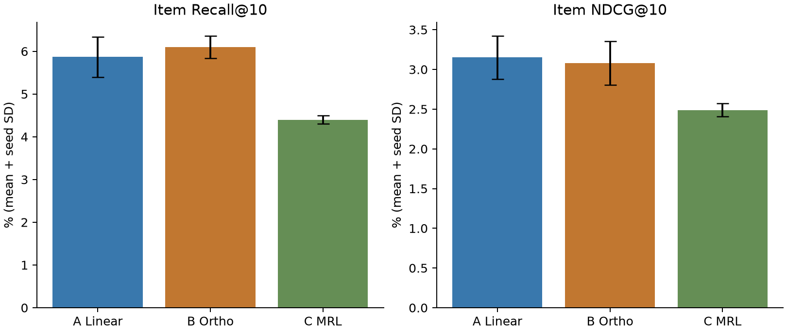

2026-10-29 · 本机 RTX 5070 Laptop · 三个随机种子 [0, 1, 2]
以本轮预先指定的商品级 NDCG@10 均值排序，领先的是 A 线性头。A 与 B 的 NDCG 配对区间跨过 0，本轮不足以确认二者谁更好。
A 线性头：头阶段 5.8 秒，整条流水线 39.9 秒；B 正交矩阵：头阶段 6.4 秒，整条流水线 41.3 秒；C 原生 MRL：头阶段 2.7 秒，整条流水线 36.8 秒。时间为三种子平均，含独立进程启动、诊断与磁盘保存，不含模型下载和一次性的文本缓存。

| 方案 | Recall@10 | NDCG@10 | 语义邻居保留@20 | 重复三元码超额商品数 | 头参数数 |
|---|---|---|---|---|---|
| A 线性头 | 5.867 ± 0.473% | 3.152 ± 0.273% | 58.717 ± 1.871% | 201 | 98432 |
| B 正交矩阵 | 6.100 ± 0.265% | 3.079 ± 0.273% | 60.592 ± 1.010% | 244 | 98304 |
| C 原生 MRL | 4.400 ± 0.100% | 2.490 ± 0.082% | 67.298 ± 0.838% | 164 | 0 |
± 是三个训练种子的样本标准差。重构误差、代理推荐分数、各层码本利用率等逐种子详情见 summary.csv。
数据为 Amazon 2014 Beauty 5-core，保留评分 ≥4、去除重复商品、元数据匹配后序列长度 ≥5。实际 14993 位用户、12069 件商品。每用户最后两次交互分别作为验证和测试，其余用于训练；同时间按 ASIN 排序。文本只含商品标题、品牌、类别和描述。切分不是全局时间因果切分；商品文本目录具有传导性。
固定 EmbeddingGemma 2 文本骨干，768 维缓存复用。A：带偏置线性头；B：QR 参数化的 128 个严格正交方向；C：原生 MRL 前 128 维再归一化，无新增训练。A/B 使用相同训练窗口、负样本流、优化器和 3 个 epoch 的推荐对比监督，以验证代理 NDCG@20 选头。A/B 与 C 的对比包含额外监督效果；B 是仅矩阵的正交读出实验，不能称为原论文 SpecMRL 的完整复现。
每个方法独立拟合同架构 RQ-VAE（128→64→32，3×256，先预热自编码器 10 epochs 再做码本初始化与量化训练 15 epochs），加显式碰撞后缀构成四个 token。后缀词表大小因碰撞不同，会改变推荐器少量参数。相同 GRU 推荐器训练 5 epochs，验证 CE 选模型，beam=30，合法目录前缀约束。固定抽样相同 1000 位用户进行全目录 SID 搜索，过滤已见商品，无抽样候选负例；beam 为近似搜索。
区间先对同一用户的三个种子取均值，再重采样用户 5000 次；只衡量用户样本不确定性，不代表完整训练随机性。相同用户必须在所有方法逐一对齐。
A 有任意缩放、非正交混合和偏置，表达能力强；B 约束保留方向正交，但每步 QR 带来训练开销；C 无头训练成本、直接使用预训练语义结构。最终推荐成绩优先于语义邻居保留率或 RQ 重构误差；不同表示空间的重构误差不能单独视为全维语义失真。此轮是小规模方法筛选，固定短训练预算和小型 GRU，尚不能外推至完整 TIGER/T5 或其他数据集。
来源：官方模型实现；SpecMRL。模型固定版本、数据/代码校验和与运行环境见 manifest.json；各阶段耗时见 timings.jsonl；逐用户预测和训练日志保存在 seed 目录。